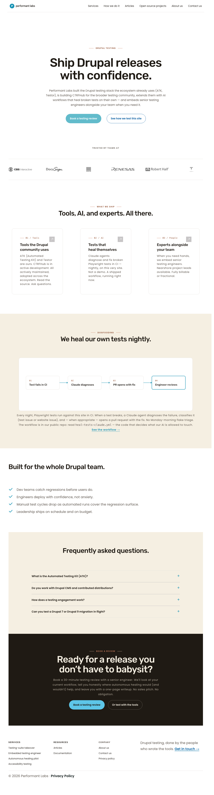
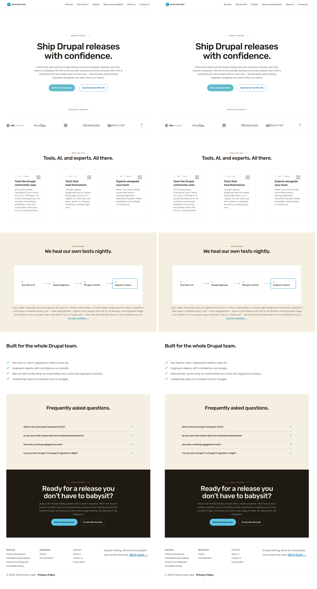
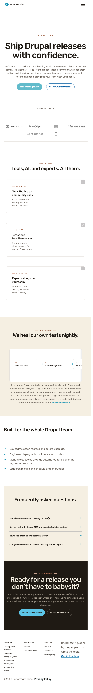
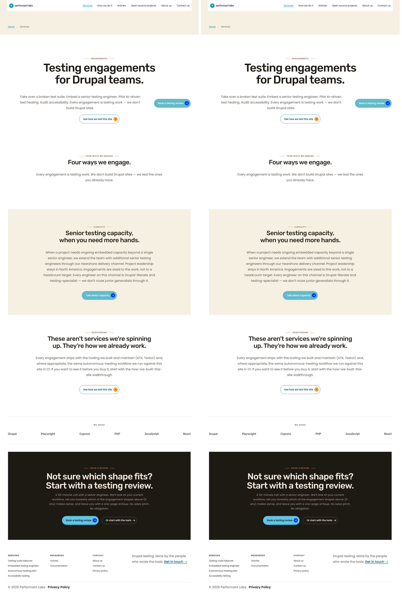
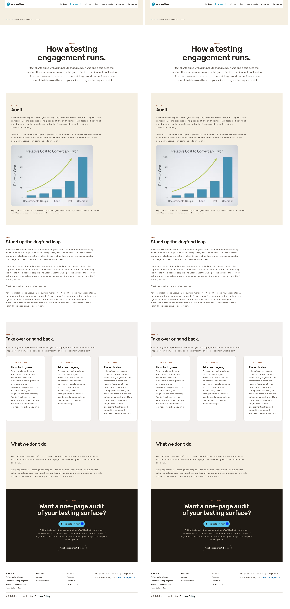
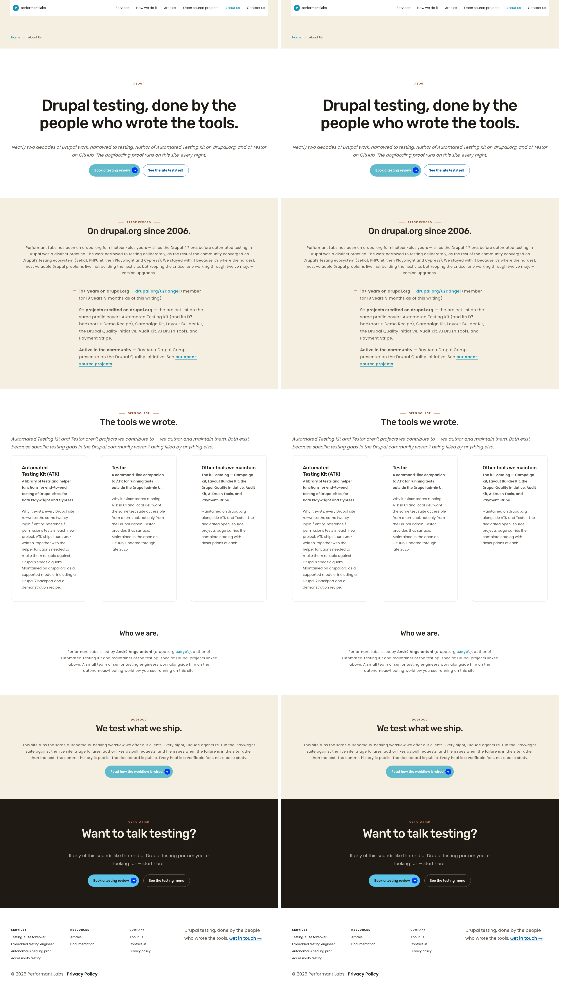
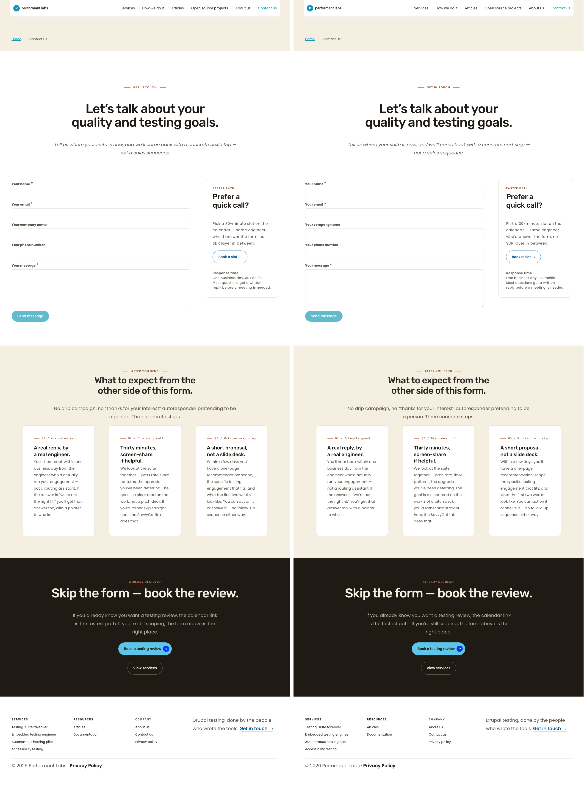
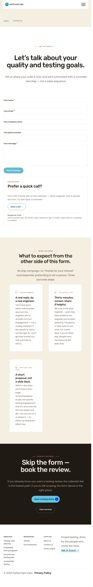
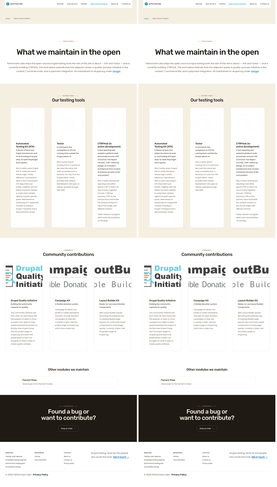
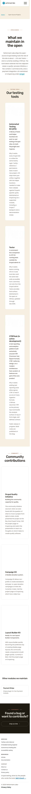

1280 × 800 — full-page screenshot (AE=0)
Baseline (pre-refactor)Live (post-refactor)


Side-by-side composite

:has(.dy-section__header .kicker--centered) selector half for a marker-class half on the same DOM elements with the same declarations./services "Four ways we engage" and / "What we ship") retain the :not(:has(.grid-wrapper)) structural guard on the content-centering rule — card layout unchanged./open-source-projects is a regression-only page (no marker changes) and is pixel-identical.| Page | Viewport | Image dimensions | AE (px diff) | Delta % | Result |
|---|---|---|---|---|---|
| / | 1280×800 | 1280×4754 | 0 | 0.000% | MATCH |
| / | 768×1024 | 768×5658 | 0 | 0.000% | MATCH |
| / | 375×667 | 375×7065 | 0 | 0.000% | MATCH |
| /services | 1280×800 | 1280×3854 | 0 | 0.000% | MATCH |
| /services | 768×1024 | 768×4266 | 0 | 0.000% | MATCH |
| /services | 375×667 | 375×5059 | 0 | 0.000% | MATCH |
| /how-we-do-it | 1280×800 | 1280×5378 | 0 | 0.000% | MATCH |
| /how-we-do-it | 768×1024 | 768×6471 | 0 | 0.000% | MATCH |
| /how-we-do-it | 375×667 | 375×8174 | 0 | 0.000% | MATCH |
| /about-us | 1280×800 | 1280×4549 | 0 | 0.000% | MATCH |
| /about-us | 768×1024 | 768×5690 | 0 | 0.000% | MATCH |
| /about-us | 375×667 | 375×7952 | 0 | 0.000% | MATCH |
| /contact-us | 1280×800 | 1280×3452 | 0 | 0.000% | MATCH |
| /contact-us | 768×1024 | 768×4814 | 0 | 0.000% | MATCH |
| /contact-us | 375×667 | 375×6096 | 0 | 0.000% | MATCH |
| /open-source-projects | 1280×800 | 1280×4490 | 0 | 0.000% | MATCH |
| /open-source-projects | 768×1024 | 768×7041 | 0 | 0.000% | MATCH |
| /open-source-projects | 375×667 | 375×9293 | 0 | 0.000% | MATCH |
Hero unchanged; "What we ship" (section 15) now carries the marker class — header centering unchanged thanks to identical declarations on the doubled-class half. AE=0 confirms.





"Four ways we engage" (section 6) gains the marker. Grid-wrapper guard preserves card-layout behaviour. AE=0 at all viewports.





Hero "Process" (section 0) marker added. AE=0 at all viewports.





Hero (section 0, has cta-pair marker) and Bio block (section 11, has bio-block marker) each gain the centered-white marker as a second class. AE=0 at all viewports.





Hero "Get in touch" (section 0, has contact-us-hero marker) gains the centered-white marker as a second class. AE=0 at all viewports.







No marker changes this cycle — regression page. AE=0 at all viewports confirms zero collateral impact.







| Section | Viewport | Status | Notes |
|---|---|---|---|
| All sections match — no visible differences at any viewport on any page. | |||
git stash F's CSS edit.dy-section--centered-white marker from the 6 patched sections to reconstruct the pre-refactor DB state.ddev drush cr.git stash pop restored F's CSS; F's marker script re-applied the markers; ddev drush cr.compare -metric AE -fuzz 1% on each pair → AE=0 across all 18 pairs.